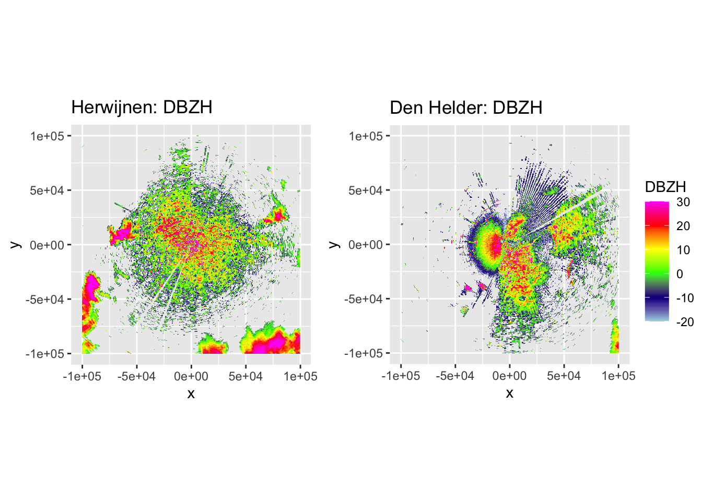
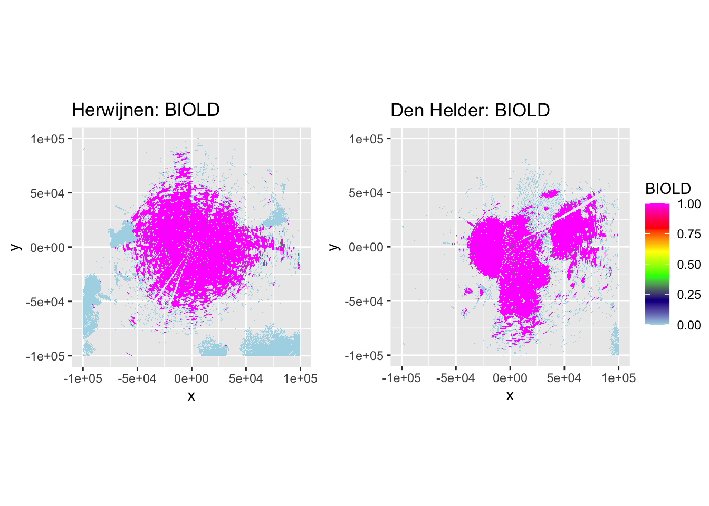
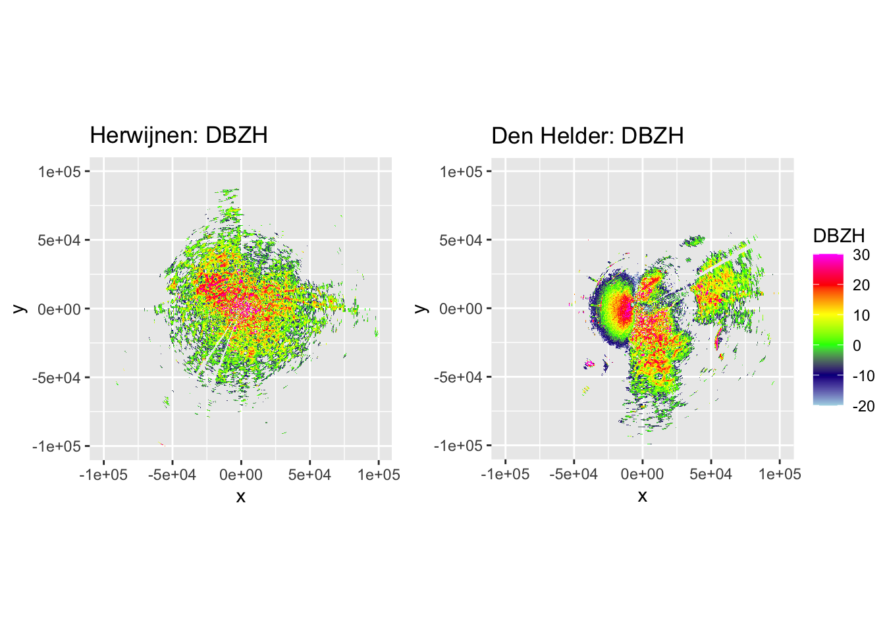
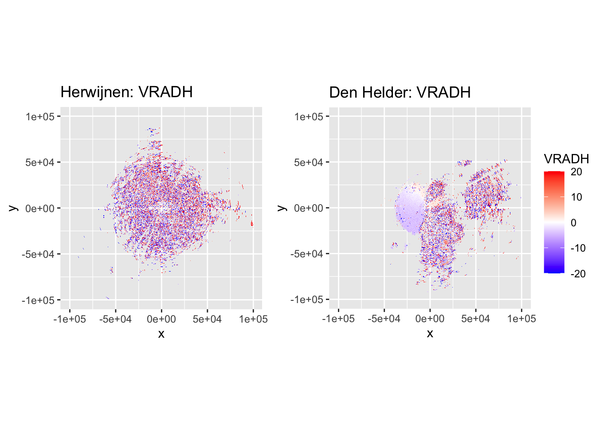

2 Radar Data Preprocessing
Weather radar data of the firework events at the turns of the years usually contain some degree of precipitation clutter. To filter out precipitation advanced algorithms such as MistNet have been developed, but as we are dealing with dual-polarization radar data here, we can use a simpler and yet robust method using the depolarization ratio (Kilambi, Fabry, and Meunier 2018).
To make sure our processed weather radar data does not contain any significant proportions of precipitation or ground clutter anymore, we process the data as follows:
- We remove electromagnetic interference based on a visual inspection of the scans and throw out all data of affected rays.
- We calculate the depolarization ratio (Kilambi, Fabry, and Meunier 2018) and separate biology from meteorology by classifying all range gates with a depolarization ratio \(>-12dB\) as biology. We subsequently ‘despeckle’ this, to remove obvious misclassifications.
- We average reflectivity over a number of scans before the time of the fireworks event and throw out the range-gates with highest average reflectivities.
All these steps can be undertaken directly on the polar volume data, so we can subsequently plug the cleaned up volume into the range-bias correction.
2.1 Processing environment
As usual, most of the processing takes place using bioRad (Dokter et al. 2019).
2.2 Removing electromagnetic interference
We have determined in which scans birds are taking off based on the maximum increase in reflectivity in the scan for each of the involved radars. Let’s now look at these scans to see how much filtering for electromagnetic interference we need to do. The easiest way to determine which rays are subject to this interference is by plotting the scans in polar coordinates \((r, \alpha)\), so interference stands out as horizontal lines of more or less constant, or very gradually changing reflectivities. Plotting using plotly makes it easier to identify the specific problematic rays as one can zoom in to identify the exact azimuths \(\alpha\) at which this interference occurs, but for this web version we stick to the static plots using bioRad:::plot.scan().
The scans we will be using:
-
Herwijnen:
RAD_NL62_VOL_NA_201712312305_ODIM.h5 -
Den Helder:
RAD_NL61_VOL_NA_201712312305_ODIM.h5
For illustrative purposes we will only illustrate removal of EM interference for the Herwijnen radar, as the procedure for Den Helder is exactly identical, but this scan contains very little of said clutter.
pvol_hrw <- read_pvolfile(pvol_hrw_path, param = "all")
pvol_dhl <- read_pvolfile(pvol_dhl_path, param = "all")
scan <- plot(pvol_hrw$scans[[1]], param = "DBZH", xlim = c(0, 180000)) + theme_dark()
# ggplotly(scan) # Use when manually filtering EM contaminated beams
plot(scan)Right away we can see that rays at two places in the scan are subject to electromagnetic interference. This is probably most problematic in the lowest elevations of the volume scan, but nevertheless each of the 16 scans have to be checked manually. Doing so results in the identification of the following rays that contain electromagnetic interference (ei_rays), organised in a list with the scan numbers (organised ascendingly per elevation angle) as keys. Admittedly: there is another ray that seems to contain interference in the first scan, but this is so far away from the radar (150km+) it should not affect our results as no meaningful numbers of birds can be detected at that range anyways and we thus exclude it from our analysis. Similarly, there are similar patterns of interference/clutter in higher elevation scans, but these too should not affect our results.
ei_rays_hrw <- list(c(201, 202, 214, 215), # scan 1
c(201, 202, 214, 215), # scan 2
c(201, 202, 214, 215), # scan 3
c(202, 214, 215)) # scan 4
names(ei_rays_hrw) <- c(1, 2, 3, 4)
ei_rays_dhl <- list(c(60, 61)) # scan 1
names(ei_rays_dhl) <- c(1)We can now remove the data for the affected rays in the corresponding scans by setting the values to NA (see R/remove_rays.R).
source("R/remove_rays.R")
pvol_hrw <- remove_rays(pvol_hrw, rays = ei_rays_hrw)
pvol_dhl <- remove_rays(pvol_dhl, rays = ei_rays_dhl)2.2.1 Verify removal of rays with EM interference
If removal is correct, the \((r,\alpha)\) plots should not show clear horizontal structures anymore.
i = 1
plot(pvol_hrw$scans[[i]], param = "DBZH", xlim = c(0, 180000)) + theme_dark() +
labs(title = "Herwijnen: Cleaned from EM interference", subtitle = paste("Elevation:", round(pvol_hrw$scans[[i]]$attributes$where$elangle, 1)))
plot(pvol_dhl$scans[[i]], param = "DBZH", xlim = c(0, 180000)) + theme_dark() +
labs(title = "Den Helder: Cleaned from EM interference", subtitle = paste("Elevation:", round(pvol_dhl$scans[[i]]$attributes$where$elangle, 1)))That seems to work nicely.
2.3 Filter meteorology using the depolarization ratio
Meteorology can be filtered using the depolarization ratio following Kilambi et al. (2018). We calculate the depolarization ratio for the raw pvol data after EM interference has been removed and subsequently ‘despeckle’ the results to improve the classification.
Despeckling works by comparing the classification of the majority of the neighbourhood rangegates with the classification of the center rangegate, and changing the latter to reflect the majority of the neighbourhood classification if there is a difference. We define the ‘neighbourhood’ as a \(3^{\circ}\) by \(3 \times rscale\) area centered around a focal rangegate (3 rangegates in azimuth \(\times\) 3 rangegates in range). Selecting the rangegates while taking the sphericity of the radar scan into account (e.g. ray 360 should be directly adjacent to ray 1) is made easier with the R/window_coords.R function. The despeckling is implemented in R/despeckle_scan_logical.R.
With the despeckling algorithm in place, we can:
- Calculate the depolarization ratio (
DPR). - Classify biology as rangegates where
DPR > -12and store this classification asBIOLR(Biology Raw)scanparameter in thepvolobject. - Despeckle the classification and store the outcome in the
BIOLD(Biology Despeckled)scanparameter in thepvolobject.
source("R/window_coords.R")
source("R/despeckle_scan_logical.R")
# Calculate depolarization ratio, classify and despeckle biology classifications for the entire volume
calculate_dpr <- function(pvol){
for (i in seq_along(pvol$scans)) {
# Calculate ZDR as ZDR = DBZH - DBZV
pvol$scans[[i]]$params$ZDR <- pvol$scans[[i]]$params$DBZH - pvol$scans[[i]]$params$DBZV
attributes(pvol$scans[[i]]$params$ZDR)$param <- "ZDR"
# Calculate depolarization ratio
zdr_linear <- 10 ** (pvol$scans[[i]]$params$ZDR / 10)
dpr_linear <- (zdr_linear + 1 - 2 * sqrt(zdr_linear) * pvol$scans[[i]]$params$RHOHV) /
(zdr_linear + 1 + 2 * sqrt(zdr_linear) * pvol$scans[[i]]$params$RHOHV)
pvol$scans[[i]]$params$DPR <- 10 * log10(dpr_linear)
attributes(pvol$scans[[i]]$params$DPR)$param <- "DPR"
# Classify based on depolarization ratio
biology <- (pvol$scans[[i]]$params$DPR > -12) * 1 # multiply by 1 to convert TRUE/FALSE to 1/0
class(biology) <- c("param", "matrix")
attributes(biology) <- attributes(pvol$scans[[i]]$params$DPR) # copy attributes from DPR
attributes(biology)$param <- "BIOLR"
pvol$scans[[i]]$params$BIOLR <- biology
# Despeckle biology classification
pvol$scans[[i]]$params$BIOLD <- pvol$scans[[i]]$params$BIOLR
pvol$scans[[i]]$params$BIOLD <- despeckle_scan_logical(pvol$scans[[i]]$params$BIOLD)
attributes(pvol$scans[[i]]$params$BIOLD)$param <- "BIOLD"
}
return(pvol)
}
pvol_hrw <- suppressWarnings(calculate_dpr(pvol_hrw)) # Will throw NaN warnings if not suppressed
pvol_dhl <- suppressWarnings(calculate_dpr(pvol_dhl)) 2.3.1 Verify DPR-based classification
Now let’s plot some PPIs to verify the accuracy of DPR-based classification and the subsequent despeckling, by plotting DBZH, VRADH, DPR, BIOLR and BIOLD.
source("R/side_by_side_ppi.R")
side_by_side_ppi(pvol_hrw, pvol_dhl, "Herwijnen", "Den Helder", params = c("DBZH", "VRADH", "DPR", "BIOLR", "BIOLD"))
The plots show accurate classification of the obvious precipitation zones, except at the edges of these echoes, where BIOLD is a vast improvement over BIOLR, showing the value of despeckling. Similarly, there is a lot of ‘noise’ where birds should be, but despeckling takes care of most of that quite nicely as well. Additionally, it shows a pattern we would expect to see: at closer distances to the radar most ‘speckles’ that are not near to precipitation zones are turned into biology, and at distances further from the radar they are more often ‘flipped’ to meteorology. This method may not be perfect, but it classifies birds quite conservatively. The few misclassifications that remain should not affect the results so much, as they are few in number and do not occur at the centers of precipitation echoes, so they are not likely to turn into numerical outliers.
2.4 Remove classified precipitation from polar volumes
Now that we have accurate classifications of the rangegates based on depolarization ratios, we can start to remove the precipitation from the polar volumes, to retain a scan that comprises of only birds (with a few occasional misclassifications). As there are areas where DPR and DBZH do not overlap, we also have to remove all rangegates that are not classified.
source("R/remove_precipitation.R")
pvol_hrw <- remove_precipitation(pvol_hrw)
pvol_dhl <- remove_precipitation(pvol_dhl)Plotting the same PPIs as before should now show a cleaned-up/precipitation-free scan next to the classifications.
side_by_side_ppi(pvol_hrw, pvol_dhl, "Herwijnen", "Den Helder", params = c("DBZH", "VRADH"))
That looks very good for both Herwijnen and Den Helder radars, but for the latter we have a lot of sea clutter that still needs to be removed, which is next on the list when filtering ground clutter.
2.5 Filter ground clutter
We will filter out ground clutter by calculating summary statistics of the rangegate reflectivities over:
- The 36 scans preceding the scans selected for the study of the fireworks event (= 3 hours worth of scans).
- A day of clear weather closest to the 31st of December 2017.
For each we will filter ground clutter based on the mean DBZH values. Using the variance and mad of the DBZH was tested, but has a few difficulties:
-
variance is very sensitive to the outliers caused by rangegates with
NAvalues (detection below the ‘mds’, the minimum detectable signal) occasionally flipping over to a noisy measurement, resulting in very high variances. -
mad is much more robust to outliers, but to compute these values we need to set
NAcells to the ‘mds’ (minimum detectable signal), which will result in mad values close to, or exactly 0 for cells that never reflected as well as true static clutter, so it’s difficult to separate those.
Finally, a visual inspection showed the mean and mad of DBZH (assuming one could overcome the aforementioned problem with the latter) do not differ much, but the mean is somewhat more ‘aggressive’ in filtering, which in this case is quite good.
Combining the clutter removal based on a clear day as well as the 36 preceding scans lets us account for both truly static clutter (e.g. buildings) as well as clutter that is more dynamic such as sea and wind park clutter, without also requiring us to resort to filtering of dynamic clutter using a VRADH threshold. The quality of filtering is assessed visually.
2.5.1 Dynamic clutter
We select 36 (3 hours worth of scans) preceding the start of the fireworks (23:00 UTC) and add an additional margin of 3 scans (15 minutes of scans) as the VIR plots in the previous chapter have shown numbers of birds aloft are very low and stable up to that period.
available_scans_hrw <- Sys.glob(file.path("data/raw/pvol/clutter-removal-20171231", "*NL62*20171231*"))
available_scans_dhl <- Sys.glob(file.path("data/raw/pvol/clutter-removal-20171231", "*NL61*20171231*"))
fw_start_hrw_pvol_path <- "data/raw/pvol/fireworks-2017-2018/RAD_NL62_VOL_NA_201712312300_ODIM.h5"
fw_start_dhl_pvol_path <- "data/raw/pvol/fireworks-2017-2018/RAD_NL61_VOL_NA_201712312300_ODIM.h5"
selected_scan_hrw <- sub("fireworks-2017-2018", "clutter-removal-20171231", fw_start_hrw_pvol_path)
selected_scan_dhl <- sub("fireworks-2017-2018", "clutter-removal-20171231", fw_start_dhl_pvol_path)
selected_scan_id_hrw <- match(selected_scan_hrw, available_scans_hrw)
selected_scan_id_dhl <- match(selected_scan_dhl, available_scans_dhl)
usable_scans_hrw <- available_scans_hrw[(selected_scan_id_hrw-dynamic_time_margin-dynamic_nr_preceding_scans+1):
(selected_scan_id_hrw-dynamic_time_margin)]
usable_scans_dhl <- available_scans_dhl[(selected_scan_id_dhl-dynamic_time_margin-dynamic_nr_preceding_scans+1):
(selected_scan_id_dhl-dynamic_time_margin)]We can now loop over the files one by one and stack reflectivity data (DBZH) — after filtering out precipitation — in a multidimensional array.
Note: the following code chunk will only run in full-reproduction mode as it takes quite a lot of time. Results are saved, so the next iteration this chunk can be skipped.
source("R/stack_rainfree_reflectivities.R")
stack_rainfree_reflectivities(usable_scans_hrw, outputfile = "data/processed/clutter_dynamic_hrw.RDS")
stack_rainfree_reflectivities(usable_scans_dhl, outputfile = "data/processed/clutter_dynamic_dhl.RDS")With all DBZH compiled in a single multidimensional array, we can calculate mean reflectivity, which we store as DBZH_AVG in a pvol that now contains the dynamic clutter map.
pvol_clutter_dynamic_hrw <- readRDS("data/processed/clutter_dynamic_hrw.RDS")
pvol_clutter_dynamic_dhl <- readRDS("data/processed/clutter_dynamic_dhl.RDS")
source("R/calculate_reflectivity_stack_mean.R")
pvol_clutter_dynamic_hrw <- calculate_reflectivity_stack_mean(pvol_clutter_dynamic_hrw, mds)
pvol_clutter_dynamic_dhl <- calculate_reflectivity_stack_mean(pvol_clutter_dynamic_dhl, mds)
saveRDS(pvol_clutter_dynamic_hrw, "data/processed/clutter_dynamic_hrw_avg.RDS")
saveRDS(pvol_clutter_dynamic_dhl, "data/processed/clutter_dynamic_dhl_avg.RDS")
pvol_clutter_dynamic_hrw <- readRDS("data/processed/clutter_dynamic_hrw_avg.RDS")
pvol_clutter_dynamic_dhl <- readRDS("data/processed/clutter_dynamic_dhl_avg.RDS")2.5.1.1 Verify dynamic clutter map
Let’s see what that looks like on a basemap, using a DBZH_AVG threshold of \(-10dbZ\), following (Dokter et al. 2011).
scan_hrw <- pvol_clutter_dynamic_hrw$scans[[1]]
scan_dhl <- pvol_clutter_dynamic_dhl$scans[[1]]
side_by_side_ppi(pvol_clutter_dynamic_hrw, pvol_clutter_dynamic_dhl, "Herwijnen dynamic clutter", "Den Helder dynamic clutter",
params = "DBZH_AVG", range_max = 50000, scan_id = 1, basemap = TRUE, zlim = c(-11, -10))Visually assessing this clutter map shows that it works quite well, selecting e.g. areas with wind parks, sea clutter, high buildings, industry, etc. Exactly what we hoped to achieve.
2.5.2 Static clutter
Now, let’s retry exactly the same procedure, but this time selecting a day with no precipitation, which can be done using this tool by KNMI, so we can filter for truly static clutter.
We select the following days:
- Herwijnen: December 29th, 2017
- Den Helder: December 25th, 2017
Note: the following code chunk will only run in full-reproduction mode as it takes a lot of time to run. Results are saved, so the next iteration this chunk can be skipped.
source("R/stack_rainfree_reflectivities.R")
available_scans_hrw <- Sys.glob(file.path("data/raw/pvol/clutter-removal-20171229-hrw", "*NL62*20171229*"))
available_scans_dhl <- Sys.glob(file.path("data/raw/pvol/clutter-removal-20171225-dhl", "*NL61*20171225*"))
stack_rainfree_reflectivities(available_scans_hrw, outputfile = "data/processed/clutter_static_hrw.RDS")
stack_rainfree_reflectivities(available_scans_dhl, outputfile = "data/processed/clutter_static_dhl.RDS")And we calculate mean DBZH values (DBZH_AVG).
pvol_clutter_static_hrw <- readRDS("data/processed/clutter_static_hrw.RDS")
pvol_clutter_static_dhl <- readRDS("data/processed/clutter_static_dhl.RDS")
source("R/calculate_reflectivity_stack_mean.R") # Source because full_repro may be set to FALSE
pvol_clutter_static_hrw <- calculate_reflectivity_stack_mean(pvol_clutter_static_hrw, mds)
pvol_clutter_static_dhl <- calculate_reflectivity_stack_mean(pvol_clutter_static_dhl, mds)
saveRDS(pvol_clutter_static_hrw, "data/processed/clutter_static_hrw_avg.RDS")
saveRDS(pvol_clutter_static_dhl, "data/processed/clutter_static_dhl_avg.RDS")
pvol_clutter_static_hrw <- readRDS("data/processed/clutter_static_hrw_avg.RDS")
pvol_clutter_static_dhl <- readRDS("data/processed/clutter_static_dhl_avg.RDS")2.5.2.1 Verify static clutter map
Once again, let’s see what that looks like on a basemap, using a DBZH_AVG threshold of \(-10dbZ\), following (Dokter et al. 2011).
scan_hrw <- pvol_clutter_static_hrw$scans[[1]]
scan_dhl <- pvol_clutter_static_dhl$scans[[1]]
side_by_side_ppi(pvol_clutter_static_hrw, pvol_clutter_static_dhl, "Herwijnen static clutter", "Den Helder static clutter",
params = "DBZH_AVG", range_max = 50000, scan_id = 1, basemap = TRUE, zlim = c(-11, -10))2.5.3 Remove dynamic and static clutter
Now that we have identified both dynamic and static clutter, we can create the final cleaned up polar volume.
source("R/remove_groundclutter.R")
pvol_hrw <- remove_groundclutter(remove_groundclutter(pvol_hrw, pvol_clutter_dynamic_hrw), pvol_clutter_static_hrw)
pvol_dhl <- remove_groundclutter(remove_groundclutter(pvol_dhl, pvol_clutter_dynamic_dhl), pvol_clutter_static_dhl)
saveRDS(pvol_hrw, file = "data/processed/pvol_clean_hrw.RDS")
saveRDS(pvol_dhl, file = "data/processed/pvol_clean_dhl.RDS")2.6 Range-bias correction
With all identifiable sources of clutter removed from the raw polar volume, we can apply the range-bias correction (Kranstauber et al. 2020). For this it is necessary to calculate the local vertical profile for each of the radars. Ideally, this would be done using the filtered pvol we have now generated, but the vol2bird algorithm (Dokter et al. 2011) only takes pvol files as input, rather than R objects. As there is no implementation of a converter yet, for now a vp of the raw pvol files will have to do. As there is no precipitation within the relevant distance to the radars (5-35km), the calculated vp based on the raw pvol files should not differ wildly from that of the filtered pvol R object we have generated in the previous steps.
For the Den Helder radar we calculate the vp by setting azimuthal limits to cover the mainland of North Holland, rather than the whole radar domain, as the latter will result in vps that underestimate the true density of birds aloft. See [the corresponding appendix][generating-vps-for-den-helder-radar] for a more detailed explanation.
vp_hrw <- calculate_vp(file = pvol_hrw_path, vpfile = paste("data/processed/vp/", basename(pvol_hrw_path), sep = ""), verbose = FALSE)
vp_dhl <- calculate_vp(file = pvol_dhl_path, vpfile = paste("data/processed/vp/", basename(pvol_dhl_path), sep = ""),
verbose = FALSE, azim_min = 90, azim_max = 200)
corrected_ppi_hrw <- integrate_to_ppi(pvol_hrw, vp_hrw, res = 500, xlim = c(-150000, 150000), ylim = c(-150000, 150000))
corrected_ppi_dhl <- integrate_to_ppi(pvol_dhl, vp_dhl, res = 500, xlim = c(-150000, 150000), ylim = c(-150000, 150000))
saveRDS(corrected_ppi_hrw, file = "data/processed/corrected_ppi_hrw.RDS")
saveRDS(corrected_ppi_dhl, file = "data/processed/corrected_ppi_dhl.RDS")We can now plot the final range-corrected PPIs.
p_vir_hrw <- plot(corrected_ppi_hrw, param = "VIR", zlim = c(0, 20000)) + labs(title = "Herwijnen: VIR")
p_vir_dhl <- plot(corrected_ppi_dhl, param = "VIR", zlim = c(0, 20000)) + labs(title = "Den Helder: VIR")
ggarrange(p_vir_hrw, p_vir_dhl, ncol = 2, nrow = 1, common.legend = TRUE, legend = "right")2.7 Keep biology/meteorology classification
By default the range-bias correction returns values from 0 upwards, so there is no way for us to distinguish anymore between ‘pixels’ that did not reflect and those that were filtered out as meteorology. That’s why we will additionally add the class parameter to the range-bias corrected PPIs. To avoid misalignment and differences in vertical integration compared with the range-bias correction, we can ‘trick’ the RBC by replacing the DBZH values it expects by the BIOLD(despeckled biology) values (either 0 for meteorology or 1 for biology) multiplied by 1000. This would result in very high integrated values of VIR where an area is classified as biology and very low values where it is classified as meteorology.
pvol_hrw_classified <- calculate_param(pvol_hrw, DBZH = BIOLD * 1000)
pvol_dhl_classified <- calculate_param(pvol_dhl, DBZH = BIOLD * 1000)
pvol_hrw_classified <- remove_groundclutter(remove_groundclutter(pvol_hrw_classified, pvol_clutter_dynamic_hrw), pvol_clutter_static_hrw)
pvol_dhl_classified <- remove_groundclutter(remove_groundclutter(pvol_dhl_classified, pvol_clutter_dynamic_dhl), pvol_clutter_static_dhl)
corrected_ppi_hrw_classified <- integrate_to_ppi(pvol_hrw_classified, vp_hrw, res = 500, xlim = c(-150000, 150000), ylim = c(-150000, 150000))
corrected_ppi_dhl_classified <- integrate_to_ppi(pvol_dhl_classified, vp_dhl, res = 500, xlim = c(-150000, 150000), ylim = c(-150000, 150000))
p_vir_hrw_classified <- plot(corrected_ppi_hrw_classified, param = "VIR", zlim = c(0, 50000)) + labs(title = "Herwijnen: VIR")
p_vir_dhl_classified <- plot(corrected_ppi_dhl_classified, param = "VIR", zlim = c(0, 50000)) + labs(title = "Den Helder: VIR")
ggarrange(p_vir_hrw_classified, p_vir_dhl_classified, ncol = 2, nrow = 1, common.legend = TRUE, legend = "right")That looks good, so now we add it to the corrected PPIs. We reclassify the VIR as follows:
- Biology gets
class = 2, - Meteorology gets
class = 1, - Background gets
class = 0.
corrected_ppi_hrw_classified$data@data %>%
mutate(class = case_when(
VIR > 40000 ~ 2,
VIR <= 40000 & VIR > 0 ~ 1,
VIR == 0 ~ 0
)) %>%
dplyr::select(class) -> class_hrw
corrected_ppi_dhl_classified$data@data %>%
mutate(class = case_when(
VIR > 40000 ~ 2,
VIR <= 40000 & VIR > 0 ~ 1,
VIR == 0 ~ 0
)) %>%
dplyr::select(class) -> class_dhl
corrected_ppi_hrw$data$class <- unlist(class_hrw)
corrected_ppi_dhl$data$class <- unlist(class_dhl)2.8 Distance to radar
To account for remaining range-bias effects, it is also useful to calculate the distance to the radar from a given PPI pixel. We can then include it in our modelling efforts later on.
source("R/calculate_distance_to_radar.R")
corrected_ppi_hrw <- calculate_distance_to_radar(corrected_ppi_hrw)
corrected_ppi_dhl <- calculate_distance_to_radar(corrected_ppi_dhl)2.9 Spatial coordinates
Furthermore, it can be useful to keep spatial coordinates to correct for spatial autocorrelation should this be necessary, so we calculate these as well.
coords_hrw <- coordinates(corrected_ppi_hrw$data)
corrected_ppi_hrw$data$x <- coords_hrw[, 1]
corrected_ppi_hrw$data$y <- coords_hrw[, 2]
coords_dhl <- coordinates(corrected_ppi_dhl$data)
corrected_ppi_dhl$data$x <- coords_dhl[, 1]
corrected_ppi_dhl$data$y <- coords_dhl[, 2]
saveRDS(corrected_ppi_hrw, file = "data/processed/corrected_ppi_hrw.RDS")
saveRDS(corrected_ppi_dhl, file = "data/processed/corrected_ppi_dhl.RDS")2.10 Visualising range-bias correction
Now we can finally have a proper look at the range-corrected versions of the PPI overlaid on an interactive map. It’s a little hard to interpret with the PPI pixels that contain no birds set to 0 and no landscape below, so let’s see what it looks like on a basemap with those removed. As there are some ships out at the North Sea causing reflectivities orders of magnitude higher and thus stretching the colormap, we — for now — need to ‘clip’ these values to a maximum set at the value of the 99th percentile.
source("R/clip.R")
filtered_corrected_ppi_hrw <- corrected_ppi_hrw
filtered_corrected_ppi_hrw$data@data <- as.data.frame(apply(filtered_corrected_ppi_hrw$data@data, 2, clip, bounds = c(0.05, 0.99)))
filtered_corrected_ppi_dhl <- corrected_ppi_dhl
filtered_corrected_ppi_dhl$data@data <- as.data.frame(apply(filtered_corrected_ppi_dhl$data@data, 2, clip, bounds = c(0.05, 0.99)))Unfortunately, due to the way leaflet stores maps it produces, we cannot plot them here using K-M knitting to generate this document. Run these chunks interactively and they should work fine.
2.10.1 Range-corrected PPI of Herwijnen radar
mapview(corrected_ppi_hrw$data)2.10.2 Range-corrected PPI of Den Helder radar
mapview(corrected_ppi_dhl$data)2.11 Preprocess additional scans
Now that the processing steps have been explained in detail, we can process the additional scans in our dataset in a similar fashion. For that we will focus on all scans from 22:00 CET until 01:00 CET, which corresponds with 23:00 until 02:00 in local Amsterdam time, as that should ‘cover’ most of the fireworks disturbance that occurs (based on the plots in Selecting firework take-off moment).
source("R/preprocess_radar_data.R")
hrw_pvols <- Sys.glob(file.path("data/raw/pvol/fireworks-2017-2018", "*NL62*"))
dhl_pvols <- Sys.glob(file.path("data/raw/pvol/fireworks-2017-2018", "*NL61*"))
dynamic_groundclutter_hrw <- readRDS("data/processed/clutter_dynamic_hrw_avg.RDS")
static_groundclutter_hrw <- readRDS("data/processed/clutter_static_hrw_avg.RDS")
dynamic_groundclutter_dhl <- readRDS("data/processed/clutter_dynamic_dhl_avg.RDS")
static_groundclutter_dhl <- readRDS("data/processed/clutter_static_dhl_avg.RDS")
for (pvol in hrw_pvols) {
preprocess_radar_data(pvol_path = pvol,
ei_rays = ei_rays_hrw,
pvol_dynamic_groundclutter = dynamic_groundclutter_hrw,
pvol_static_groundclutter = static_groundclutter_hrw,
dir_out = "data/processed/corrected-ppis/",
res = 500)
}
for (pvol in dhl_pvols) {
preprocess_radar_data(pvol_path = pvol,
ei_rays = ei_rays_dhl,
pvol_dynamic_groundclutter = dynamic_groundclutter_dhl,
pvol_static_groundclutter = static_groundclutter_dhl,
dir_out = "data/processed/corrected-ppis/",
azim_limits = c(90, 200),
res = 500)
}2.12 Preprocess baseline disturbance scans
As we want to be able to compare the disturbance to the baseline level of reflectivity on other nights at the same time, we have downloaded about 20 days of polar volumes surrounding, but not directly adjacent to the nights near NYE. In particular, we’ve downloaded polar volumes from December 15th til 25th and January 5th til 15th. To compare all these polar volumes, we have to treat them all the same, so here we will process the files for the disturbance baseline as well.
hrw_pvols <- Sys.glob(file.path("data/raw/pvol/disturbance-baseline", "NLHRW*"))
dhl_pvols <- Sys.glob(file.path("data/raw/pvol/disturbance-baseline", "NLDHL*"))
dynamic_groundclutter_hrw <- readRDS("data/processed/clutter_dynamic_hrw_avg.RDS")
static_groundclutter_hrw <- readRDS("data/processed/clutter_static_hrw_avg.RDS")
dynamic_groundclutter_dhl <- readRDS("data/processed/clutter_dynamic_dhl_avg.RDS")
static_groundclutter_dhl <- readRDS("data/processed/clutter_static_dhl_avg.RDS")
for (pvol in hrw_pvols) {
preprocess_radar_data(pvol_path = pvol,
ei_rays = ei_rays_hrw,
pvol_dynamic_groundclutter = dynamic_groundclutter_hrw,
pvol_static_groundclutter = static_groundclutter_hrw,
dir_out = "data/processed/baseline-ppis/",
res = 500)
}
for (pvol in dhl_pvols) {
preprocess_radar_data(pvol_path = pvol,
ei_rays = ei_rays_dhl,
pvol_dynamic_groundclutter = dynamic_groundclutter_dhl,
pvol_static_groundclutter = static_groundclutter_dhl,
dir_out = "data/processed/baseline-ppis/",
azim_limits = c(90, 200),
res = 500)
}